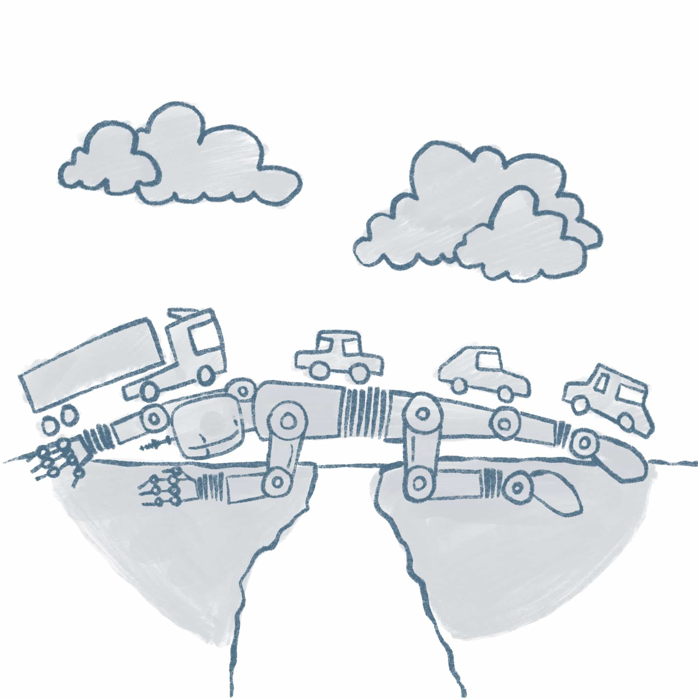

Robo Reflections

Format
{{ site.data.robo-reflections.site.format | markdownify | replace: '
{% for paper in semester[1] reversed %}
{% endfor %}
{% if paper.img %}
 {% else %}
{% endif %}
{% else %}
{% endif %}
{% else %}
{% endif %}
{% if paper.title %}
Presenter: {{ paper.presenter}} {% endif %}
{{ paper.title }}
{% endif %} {% if paper.authors %} {% endif %}
{% if paper.pdf %}
PDF
{% endif %}
{% if paper.doi %}
DOI
{% endif %}
{% if paper.drive %}
Private
{% endif %}
{% if paper.video %}
Video
{% endif %}
{% if paper.date %}
Date: {{ paper.date }}
{% endif %}
{% if paper.presenter %}
Presenter: {{ paper.presenter}} {% endif %}
{% assign sections = site.data.robo-reflections.people %}
{% for section in sections %}
{% assign section_name = section[0] %}
{% assign people = section[1] %}